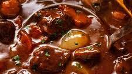

Beef Bourguignon

Introduction
This rich beef bourguignon smells incredible as it cooks. Serve this hearty yet fancy dish with potatoes, noodles, or rice.
Ingredients
- Wine: Quality counts - make sure you use a bottle you would drink.
- Brandy: cognac brandy enhances the overall flavor of the dish.
- Vegetables: You'll need fresh onions, carrots, and mushrooms. You'll also need a can of tomato paste.
- Olive oil: For browning and sauteing the mushrooms
- Spices and seasonings: This traditional beef bourguignon is seasoned with parsley, a bay leaf ,garlic, black peppercorns, salt and pepper.
- Beef: 2 pounds of cubed beef
- Flour: All-purpose flour helps thicken the bourguignon mixture.
- Broth: Use store-bought or homemade beef broth.
- Butter: Saute the mushrooms in butter before adding them to the meat mixture.
How to Make Beef Bourguignon
- Start marinating the meat two days in advance. Chill in the fridge.
- Brown the beef in olive oil until browned on all sides, then transfer to the bowl.
- Saute the bacon in the same skillet, then move the bacon to the beef bowl.
- Deglaze the skillet with a cup of the marinade.
- Saute the onions and carrots. Move the veggies to the bowl with the meat.
- Add the flour to the skillet and stir until brown.
- Add the tomato paste, garlic, broth, marinade, and salt and pepper.
- Whisk until smooth, then transfer to the bowl with the meat and veggies.
- Transfer the mixture to the baking dish and bake for three hours.
- Saute the mushrooms, then stir the mushrooms into the buurguignon.